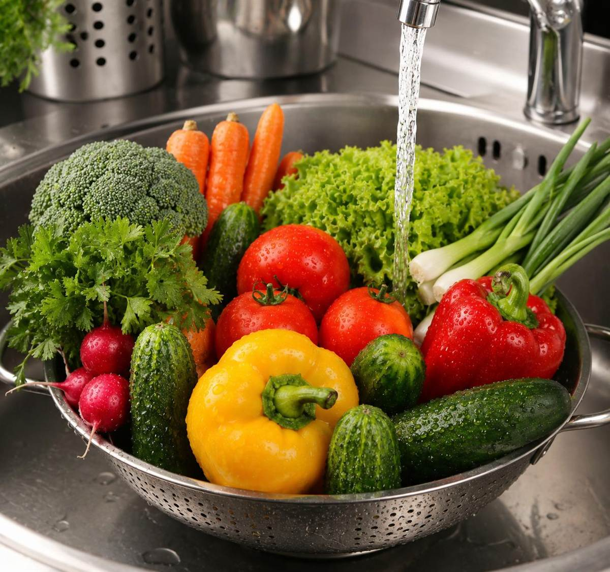
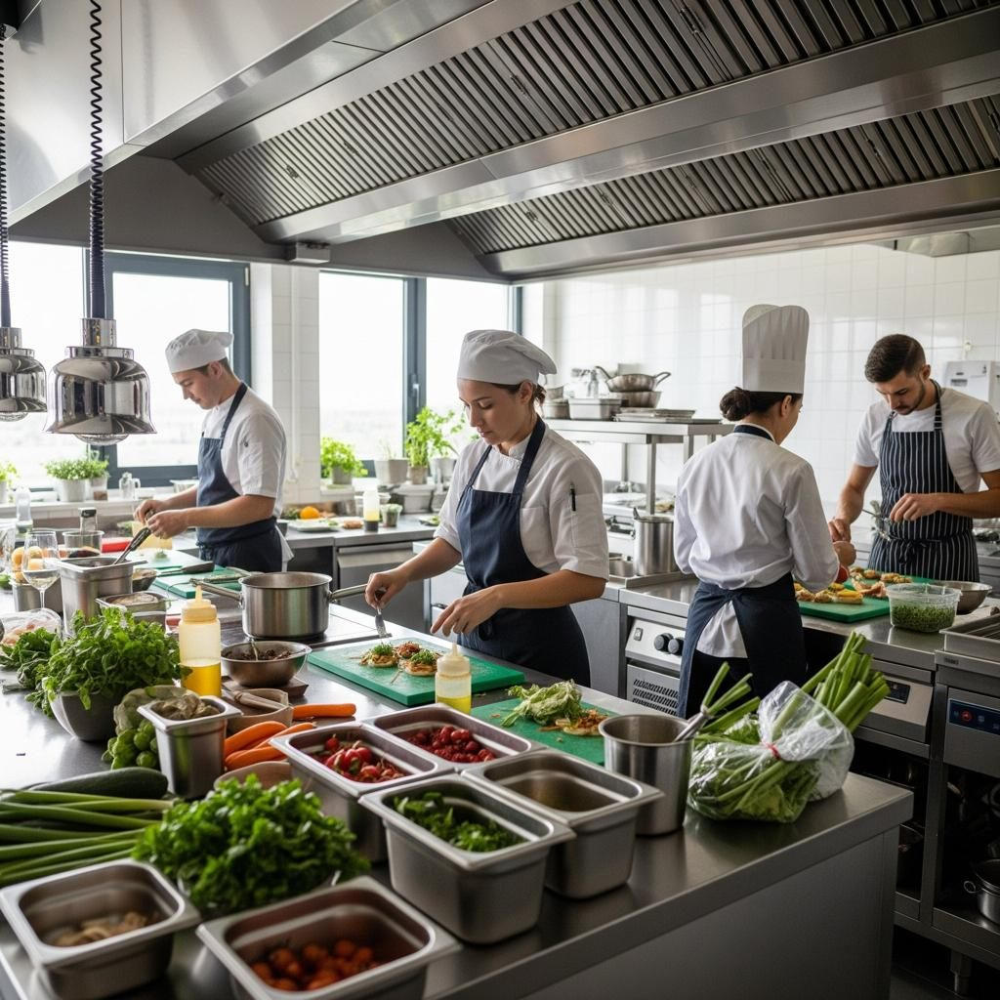

Tầm nhìn
Trở thành chuỗi Salad và nước ép lạnh được người trẻ thành thị tin chọn nhất cho bữa ăn lành mạnh hằng ngày vào năm 2030.
Từ một căn bếp nhỏ ở Quận 10, Verde Sana lớn lên cùng một niềm tin giản dị: bữa ăn lành mạnh phải tươi, ngon và do chính bạn lựa chọn.
Verde Sana – trong tiếng Ý nghĩa là “xanh và khỏe”. Năm 2022, ba người bạn làm việc văn phòng nhận ra mình luôn phải chọn giữa bữa trưa nhanh gọn và bữa trưa tốt cho sức khỏe. Chúng tôi muốn có cả hai, nên đã mở quầy Salad đầu tiên với một ý tưởng khác biệt: khách hàng tự chọn từng thành phần.
Mô hình Build-Your-Own Salad cho phép bạn kết hợp nền rau, nguồn đạm, topping và Sauce theo khẩu vị và mục tiêu dinh dưỡng của riêng mình. Bên cạnh đó là dòng nước ép lạnh Cold-Pressed, sinh tố và nước Detox nguyên chất được pha mới mỗi ngày.
“Chúng tôi không bán một thực đơn cố định. Chúng tôi trao cho bạn quyền tự do sáng tạo bữa ăn của mình.”

100%nguyên liệu nhập trong ngày
Mỗi lá rau trong tô Salad của bạn đều đi qua bốn bước kiểm soát chất lượng trước khi được giao đi.
Rau được trồng trong nhà màng tại Đà Lạt bằng dung dịch dinh dưỡng kiểm soát, không dùng thuốc trừ sâu hóa học.
Rau được cắt từ 4–6 giờ sáng khi lá còn giòn, đóng thùng lạnh và chuyển về bếp trung tâm trong ngày.
Bếp kiểm tra cảm quan, rửa qua ba lần nước lọc và nước ozone, loại bỏ lá dập trước khi chia phần.
Nguyên liệu được giữ ở 2–6°C cho đến khi trộn, và được giao bằng túi giữ lạnh để luôn tươi khi đến tay bạn.

Thay vì lưỡi dao quay tốc độ cao, máy ép thủy lực ép rau củ trái cây bằng lực nén từ từ. Nước ép không bị nóng lên và ít tiếp xúc với không khí, nhờ đó giữ được nhiều vitamin, enzyme và màu sắc tự nhiên hơn.
| Tiêu chí | Ép lạnh (Cold-Pressed) | Ép ly tâm thông thường |
|---|---|---|
| Nhiệt sinh ra | Gần như không | Cao do dao quay nhanh |
| Mức oxy hóa | Thấp, ít tách lớp | Cao, nhanh tách lớp |
| Thời hạn dùng | Đến 72 giờ (2–6°C) | Nên uống ngay |
| Lượng nước thu được | Nhiều hơn, ít bã | Ít hơn |
Trở thành chuỗi Salad và nước ép lạnh được người trẻ thành thị tin chọn nhất cho bữa ăn lành mạnh hằng ngày vào năm 2030.
Mang đến bữa ăn cân bằng, minh bạch thành phần và calo, giúp mỗi người dễ dàng xây dựng thói quen ăn uống tốt cho sức khỏe.

Mọi công thức Salad, Sauce và liệu trình Detox đều được chuyên gia dinh dưỡng xây dựng và kiểm tra định lượng calo trước khi đưa vào thực đơn.
Trưởng nhóm dinh dưỡng
Thạc sĩ Dinh dưỡng cộng đồng, 8 năm tư vấn chế độ ăn cho người làm việc văn phòng.
Bếp trưởng
Phụ trách công thức Sauce và quy trình sơ chế, đảm bảo vệ sinh an toàn thực phẩm tại bếp trung tâm.
Chuyên viên liệu trình Detox
Thiết kế các gói Detox 1, 3 và 7 ngày, cân đối lượng đường tự nhiên trong từng chai nước ép.

Chọn nền rau, đạm, topping và Sauce – hệ thống tự tính giá và calo cho bạn.